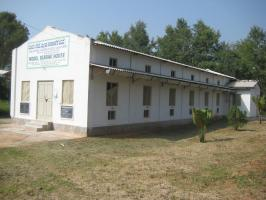

Mulberry Silkworm


{kind=link}
{kind=link}
{kind=link}
Introduction
There are many kinds of natural silk which are commercially known and produced. Among them Mulberry silk is the most important and contributes as much as 95% of the world production. There are other two types of wild silkworm that produce silk in Kenya; Gonometa and Aphe. In this section we shall look at commercial rearing of the mulberry silk butterfly and larvae - heareafter called silk worms.
Silkworm Bombyx mori (L), the source for production of fabulous silk and sericulture industry, has been domesticated more than 4000 years ago. Its adoptability to environmental conditions is different from that of the wild insects and the rearing techniques vary to suit the requirements under different ecological conditions. To find out more about business viability of silk production, see under Sericulture as a business and to find out more about growing mulberry to feed silkworms, see under Mulberry for silkworms.
Classification of Mulberry Silkworm
Entomological classification of Mulberry Silkworm is as follows:
Phylum: Arthropodia
Class: Hexapoda/insecta
Sub-class: Pterygota
Division: Endopterygota
Order: Lepidoptera (butterflies)
Family: Bombycidae
Genus: Bombyx
Species: Mori
Lifecycle of a Silkworm
As in the case of a typical Butterfly (Lepidoptera) insect, the silkworm passes through 4 distinct stages i.e. egg, larva, pupa and adult during its life cycle. The duration may last for 6-8 weeks depending on the prevailing climatic conditions.
For races in Kenya the egg period for the incubated eggs may last for 11-14 days, the larval period 24-30 days, the pupal period 12-15 days and the adult stage 6-10 days.
This means that a farmer who receives hatched silkworms can rear, harvest and sell cocoons in about 5 weeks unlike majority of other enterprises that take much longer production period.

Silkworm Rearing House and Equipment
SITE SELECTION - REARING HOUSE
Silkworms are reared in a specifically built house with adequate ventilation, light which should be rodent proof.
(a) A silkworm rearing house should be build away from farm animals' housing to avoid drifting of chemicals during spraying.
(b) Should be near the mulberry field in order to minimize the transportation distance thus cutting down on wilting of leaf.
(c) Doors and windows should be North-South direction to avoid direct sunlight into the room which could raise the room temperatures and thus cause leaves to dry fast.
The size of the rearing house is determined by size of mulberry orchard and amount of silkworm to be reared. For example, a small scale farmer with
- A 1/4 acre of mulberry orchard needs a rearing house of at least 7m x 5 m (25 ft x 15 ft). Such a house can accommodate 2 cases (40,000) of silkworms.
Locally available building materials can be used such as Bamboo, off cuts, timber, stones, mud, bricks etc to build the walls. Avoid walls made from iron sheets as it is difficult to regulate house temperatures. However iron sheets can be used for roofing. Below is a list of houses that a farmer can choose from depending on his financial capability.
|
|
| Sketch of a rearing house |
| (c) National Sericulture station, Thika, Kenya
|
| Floor plan of a rearing house |
| (c) National Sericulture station, Thika, Kenya
|
| Side view of a timber wall rearing house |
| (c) National Sericulture station, Thika, Kenya
|
| Front view with a foot bath |
| (c) National Sericulture station, Thika, Kenya
|
|  |
| Model rearing house (stone wall) |
| (c) National Sericulture station, Thika, Kenya
|
Silkworm Rearing Equipment
The minimum economic unit is 1/4 acre of Mulberry which can rear two cases of silkworm (40,000 silkworms). One requires the following equipment:
1. Rearing beds
There are different types of rearing beds. Farmers are advised to use locally available materials to keep the production cost as low as possible. Below are some of the rearing beds that farmers can adapt.
| 16 trays of 2 m x 1 m stacked in deckers |
| (c) National Sericulture station, Thika, Kenya
|
| 32 rearing trays of 1 m x 1 m with 6 rearing stands to carry 6 trays each. |
| (c) National Sericulture station, Thika, Kenya
|
| Rearing beds |
| (c) National Sericulture station, Thika, Kenya |
2. Bed cleaning nets
3. Old newspapers or brown paper
4. Mountages for spinning, -260 partitions and 26 rotary frames: Mountages can be made from timber, carton, hard paper, plywood or wire.
5. Leaf picking bags
6. Chopping knives
7. Chopping boards
8. Chopping table
9. Feathers
10. Foam rubber strips
11. Ant wells
12. Knapsack sprayer
13. Secateur
14. Jiko
Management of Silkworms
Disinfection is carried out prior to commencement of rearing as a precaution against pathogens, which remain in the rearing house.
The room or house being disinfected should be kept airtight during disinfection and should remain closed for 15 - 20 hours after disinfection. It should be opened 24 hours prior to introduction of worms. Disinfection is done using 2% formalin solution. To achieve this, add 1lt of formalin concentrate into 19 lts of water. You require 40 lt of formalin solution to cover a room of 5m x 7m x 3m. Before disinfection all rearing equipment should be cleaned and returned into the rearing house. Bleaching powder is spread in a single layer around the house and foot bath to maintain hygiene.
Warning: Protective clothing must be worn while disinfecting the house.
Temperature and Humidity
Silkworms do well in a temperature range of 23 - 28degC; with high temperatures for the younger worms and lower temperatures for the older worms. Humidity should range from 70 - 85; high for the younger worms and low for the older worms. Temperature and humidity can be moderated bz use of wet gunny bags/wet newspapers hung on the walls or pouring water on cemented floors.
Optimum temperatures and humidity for rearing silkworms of different instars are as follows:
Table 2. Temperature/Humidity
| INSTARS | TEMPERATURE (degC) | HUMIDITY (%) |
| 1st | 26 - 28 | 85 |
| 2nd | 26 - 28 | 85 |
| 3rd | 24 - 26 | 80 |
| 4th | 24 - 25 | 75 |
| 5th | 23 - 24 | 70 |
Egg Incubation and Hatching
Silkworm rearing starts with silkworm egg incubation. For healthy development and uniform hatching; eggs are incubated under optimum temperature 25degC and humidity 80% - 85%.
Under these conditions eggs are expected to hatch within 10 - 12 days.
| 1 case of silkworm eggs moth (1 batch) |
| (c) National Sericulture station, Thika, Kenya
|
 |
| Eggs form one silkworm |
| (c) National Sericulture station, Thika, Kenya
|
| Newly hatched silkworms |
| (c) National Sericulture station, Thika, Kenya
|
Brushing (1st Feeding) of Silkworm Larvae
| Brushing of Silkworm Larvae |
| (c) National Sericulture station, Thika, Kenya
|
| Fresh leaves ready for chopping |
| (c) National Sericulture station, Thika, Kenya
|
Brushing newly hatched Silkworms
There are two acceptable methods of brushing:
1. The hatched worms are brushed with a feather from the egg card directly onto the rearing bed. Care must be taken not to injure the worms.
2. Chop tender (2nd and 3rd leaf) mulberry leaves into small pieces approximately equal to the size of the hatched silkworm larvae and sprinkle over the egg card. The hatched silkworms will crawl onto the chopped leaves and start feeding. Later the cards are removed and anz larvae still left on paraffin paper or newspaper are tapped gently onto the rearing bed. When all larvae are on the rearing beds, then the first feeding is given.
| 1st feeding (hakitate) |
| (c) National Sericulture station, Thika, Kenya
|
| Silkworm put together |
| (c) National Sericulture station, Thika, Kenya
|
Stages of Growth and Feeding Methods
Silkworms undergo 4 moultings (instars) in the larval stage and are fed according to these instars.
1st stage (1st Instar) - the young worms should be fed with young tender leaves; 2nd and 3rd leaves from the tip of the shoot. These are chopped into small pieces and fed to worms for 4 days at least twice a day in the morning and late afternoon. After the 4 days the worms go into moult (sleep).
Moulting - moulting is the shedding of skin as worms enter into the next instar. Moulting takes 18 - 24 hours (1 day) and the worms should not be fed during this period.
The rearer must be able to identify when the worms are getting into and out of moult apart from counting days.
Moulting Signs:
- Swollen heads
- Raised heads
- Worms are immobile
NB: During moulting the bed should be kept dry and uncovered.
Signs of getting out of Moult
- The worms are active and move around
- The mouth part is broader
- The body is dull with loose skin
- Shed off skins are easily seen on the bed
Once the worms come out of moult, spread them out evenly to enhance dryness in the bed and to increase the bed space to match with their increasing body size.
Feed the worms when all of them have come out of moult.
| 2ndinstar silkworms |
| (c) National Sericulture station, Thika, Kenya
|
2nd stage (2nd Instar) - feed 3rd and 4th young glossy leaves. Continue feeding chopped leaves for 4 days. After this period the worms go into moult again.
| 3rdinstar silkworms |
| (c) National Sericulture station, Thika, Kenya
|
3rd stage (3rd Instar) - continue feeding the silkworms on good leaves harvested from the green part of the stem/shoot for three days. After this period silkworms go into moult.
 |
| Attending to silkworms |
| (c) National Sericulture station, Thika, Kenya
|
| 4thinstar silkworms |
| (c) National Sericulture station, Thika, Kenya
|
4th stage - feed worms on whole shoots for 6 Days.
5th stage - feed on whole shoot for 7/8 days. During feeding always maintain a single layer of shoots. Avoid over mature, yellow and diseased leaves.
Leaf Requirement for Rearing of one Case Silkworms:
| Stage | Age/Day | Leaf weight | Leaf weight per day | Leaf/shoot remarks per day | |
| 1st | 1 | 1st | 150 g | - | Harvest 2nd and 3rd young leaves |
| 2 | 2nd | 200 g | - | ||
| 3 | 3rd | 200 g | - | ||
| 4 | 4th | 150 g | - | ||
| 5 | 5th | worms sleep | - | ||
| 2nd | 6 | 1th | 350 g | - | Harvest 3rd and 4th leaves |
| 7 | 2nd | 450 g | - | ||
| 8 | 3rd | 650 g | - | ||
| 9 | 4th | 700 g | - | ||
| 10 | 5th | worms sleep | - | ||
| 3rd | 11 | 1st | - | 2 kg | Harvest leaves that are on the green part of young shoot |
| 12 | 2nd | - | 3 kg | ||
| 13 | 3rd | - | 3 kg | ||
| 14 | 4th | - | worms sleep | ||
| 4th | 15 | 1st | - | 12 kg | Harvest good shoot (1-11/2m) meters long |
| 16 | 2nd | - | 18 kg | ||
| 17 | 3rd | - | 24 kg | ||
| 18 | 4th | - | 30 kg | ||
| 19 | 5th | - | 40 kg | ||
| 20 | 6th | - | worms sleep | ||
| 21 | 7th | - | |||
| 5th | 22 | 1st | - | 20 kg | |
| 23 | 2nd | - | 30 kg | ||
| 24 | 3rd | - | 40 kg | Harvest whole shoot. | |
| 25 | 4th | - | 50 kg | ||
| 26 | 5th | - | 60 kg | ||
| 27 | 6th | - | 90 kg | ||
| 28 | 7th | - | 100 kg | ||
| 29 | 8th | - | 50 kg | ||
| 30 | 9th | - | worms start cocooning |
Bed Cleaning
Bed cleaning is done to remove fecal matter, dead worms and leaf remnants which would promote fungal growth. It is done after every moult for the young silkworms and every other day for the mature worms. Bed cleaning is best done before feeding worms.
| Bed cleaning |
| (c) National Sericulture station, Thika, Kenya
|
To clean the bed, spread a net over the worms and spread fresh leaves on top of the net. Worms will crawl up to feed on the fresh leaves on the net. Transfer the worms using the net to another clean bed/tray. Remove any remaining worms then discard the waste into a composte pile. Spread the worms well then feed them.
Different stages of silkworms require different bed space. Spread worms evenly ensuring that they do not overlap each other.
As worms increase in size, transfer some to another bed/tray to avoid overcrowding. Overcrowding leads to underfeeding, creating a microclimate for disease spread and could also lead to suffocation.
Rearing Density of 1 Case of Silkworm
| Stage | Early period | Middle period | Later period | Magnification |
| 1st | 0.3m2 | 0.4m2 | 0.6m2 | 1.0m2 |
| 2nd | 1.0m2 | 1.3m2 | 1.6m2 | 2.0m2 |
| 3rd | 2.0m2 | 2.4m2 | 3.0m2 | 4.0m2 |
| 4th | 4.0m2 | 5.0m2 | 7.0m2 | 8.0m2 |
| 5th | 8.0m2 | 12.0m2 | 16.0m2 | 17.0m2 |
Mounting
Mounting is transferring mature silkworms from rearing beds to montages to start spinning. Spinning starts 8 days after worms get into fifth (5th) stage.
Signs of Maturity
- Larvae cease to feed and crawl restlessly in search of a corner to attach themselves for spinning.
- They move to corners of the rearing beds ready to spin
- If picking of mature silkworms is delayed the worms spin on teh bed and silk fiber is found on the bed
- The worms appear cream white as they are full of silk
- They appear shrank in length
Process of Mounting
The mature worms are picked from the rearing beds and trasferred to mountages. Care should be taken to put the right number of worms on the mountages to avoid overcrowding and formation of double cocoons.
| Picking mature worms |
| (c) National Sericulture station, Thika, Kenya
|
NB: Diseased worms should be picked separately and discarded either by burning or burying.
90 - 100 larvae should be mounted per square foot (1ft2)
| Well spaced silkworms on mountage |
| (c) National Sericulture station, Thika, Kenya
|
| Silkworms on a rotary mountage |
| (c) National Sericulture station, Thika, Kenya
|
Papers should be spread on the floor below the mountages to absorb urine from the worms and changed when they become damp.
Temperature should not exceed 26degC. Humidity should be between 60-70%. These two parameters affect the quality of cocoons (reliability). While spinning there should be minimal disturbance to the silkworm.
| A mature spinning silkworm |
| (c) Nature Sericulture station, Thika, Kenya
|
| Partially spun cocoons |
| (c) Nature Sericulture station, Thika, Kenya
|
| Fully spun cocoons on rotary mountages |
| (c) National Sericulture station, Thika, Kenya
|
| Fully spun cocoons on timber mountage |
| (c) National Sericulture station, Thika, Kenya
|
Harvesting Cocoons
Cocoons are harvested on the 7th to 8th day from the inception of spinning. By this time the worm will have completed spinning of cocoon and transformed into pupa. To confirm this, cut 2 or 3 cocoons to check whether pupae are fully formed. The optimum time for harvesting is when the pupae turn brown in color and become hard.
| Fully formed pupa |
| (c) Nature Sericulture station, Thika, Kenya
|
De-flossing - After harvesting all loose fiber on cocoons surface is removed, giving it a clean look, ready for the market. Failure to de-floss cocoons lowers the marketability of the cocoon.
| Harvested cocoons | Deflossed cocoons |
| (c) National Sericulture station, Thika, Kenya
| (c) National Sericulture station, Thika, Kenya |
Diseases and Pests of Silkworms
Since mulberry silkworms are domesticated, they are suseptible to disease and pest attack.
Proper disinfection and strict hygiene will prevent diseases and ensure successful harvest.
Common silkworm diseases are Grasserie, Pebrin, Flacherie and Muscardine.
| When stretched |
| (c) Nature Sericulture station, Thika, Kenya
|
| When contracted |
| (c) Nature Sericulture station, Thika, Kenya
|
| Larvae starts to turn dark |
| (c) Nature Sericulture station, Thika, Kenya
|
Symptoms
- The larvae will be sluggish with swollen inter-segmental region
- The larvae will be fragile
- On piercing, milky fluid containing many polyhedral inclusion bodies oozes out from the larval body
- The diseased larvae do not settle for moult
- The larvae appear to be restless
- The dead larvae hang by hind legs head downward
- Young age larvae may get infected with grasserie if the silkworm egg surface is not disinfected
Causes
- The Pathogen comes from infected eggs laid by infected mother moths
- May exist in rearing facilites or Mulberry gardens as spores
- Comes from wild insects naturally infected with Nosema bombsycis
Control
- Disinfect silkworm rearing house, its surrounding and appliances before brushing
- Conduct additional disinfection with 0.3% lime solution. Rear young silkworms as well as late age silkworms under strict hygienic condition
- Avoid high temperatures (28-35degC), low rearing temperatures (10-20degC) and rearing humidity (less than 70%)
- Dust lime uniformly when larvae settle for moult
- Dust every time the larvae come out of moult
- Feed quality Mulberry leaf
| Stunted silkworms | Larvae upon dying |
| (c) Nature Sericulture station, Thika, Kenya
| (c) Nature Sericulture station, Thika, Kenya |
Symptoms
The diseased larvae will be:
- Stunted in growth
- Dull and lethargic
- Soft and appear flaccid
- The thoracic region may be translucent
- The larvae vomit gut juice
- The larvae on dying rot and emit a bad smell
Control
- Clean and disinfect rearing trays once again. The pathogens contaminate the rearing tray, bed and Mulberry leaf in the bed. They survive in teh rearing tray/bed for a long time and cause the disease if they are not disinfected effectively.
- Control humidity as per guidelines above. If the temperature and humidty is too high in the tray/bed, the accumulation of faeces, wasted leaves and poor air circulation are suitable for the bacteria to multiply in the larvae and rearing bed.
 |
| Flaccid dead larvae |
| (c) Nature Sericulture station, Thika, Kenya
|
Symptoms
- The diseased larvae prior to death will be lethargic and on death are flaccid
- Oil specks may be seen on the surface of the larvae
- They gradually become hard, dry and mummify into white or green
- The diseased pupae will be hard, lighter and mummified
Control
- Disinfect rearing house and appliances
- Reduce silkworm bed humidity by dusting lime powder after bed cleaning
- Collect the entire diseased larva and burn them
- Practice rearing and personal hygiene during rearing
- Practice control measure against mulberry pests
Silkworm pests include the following
- Rats
- Birds
- Safari and Black ants
- Snakes
- Lizards
Pest Control
- Put coffee tray wire mesh on all the windows, crevices and any other openings in the rearing house
- Maintain cleanliness both within and outside the house
- Sprinkle one layer of bleaching powder (calcium chloride) around the rearing house
Review Process:
All above information contributed by the National Sericulture Institute, Thika, Kenya. For further information and training please contact:
James Oniango, Mobile 0723 205 168
Information Source Links
- Central Silk Board (2003) Seri Business Manual; Users Guide.
- Dr. K. Kawakami (JICA) and Dr. H. Yanagawa (JICA) (2003). Illustrated Handbook on Silkworm Disease Control Technology
- Dr. M. N. Narasimhanna (1988) Manual on Sericulture Egg Production.
- Dr. Manjeet S. Jolly,(1987). Appropriate Sericulture Techniques
- FAO Bulletin (1991) Silkworm diseases.
- FAO Bulletins (1987) Manuals on Sericulture.
- Jica. Third country training Programme (2010) Bivoltine Sericulture Technology
- National Sericulture Station (2008). Manual guide to Sericulture practices in Kenya.
Authors Contact Addresses
- Rosemary K. Nyamu: Tel. 0718987376, Email: rosemarymwololo@yahoo.com
- Joyce N. Wainaina: Tel. 0721523565, Email: joycewainaina@yahoo.com
- James A. Onyango: Tel. 0723205168, Email: awegaja@yahoo.com
- National Sericulture station: Tel 0202023117, Email: serithi@yahoo.com